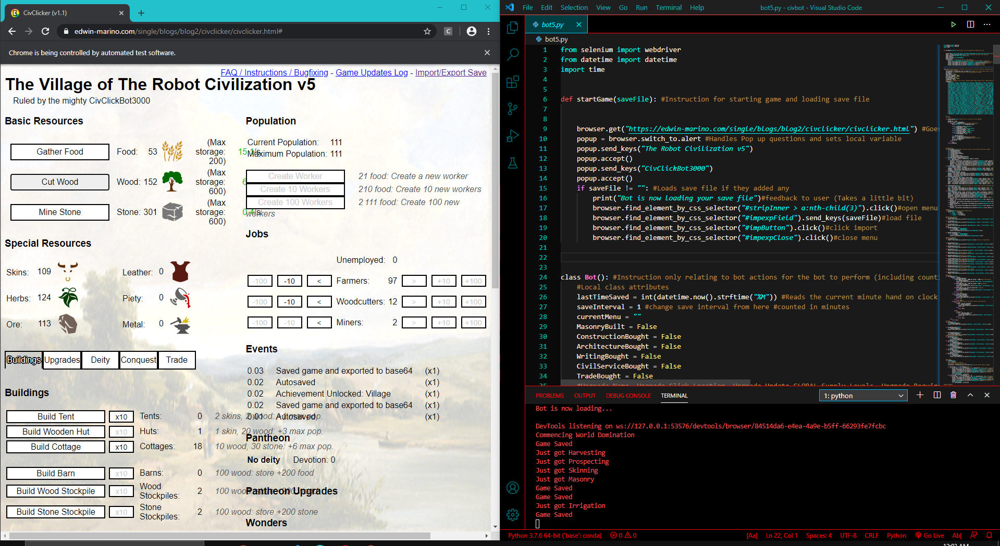
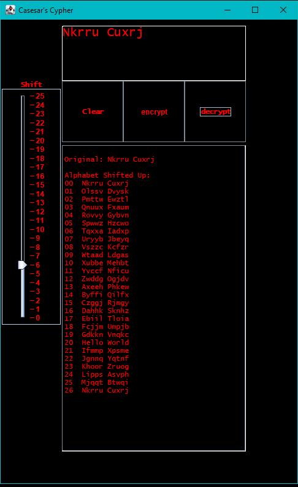
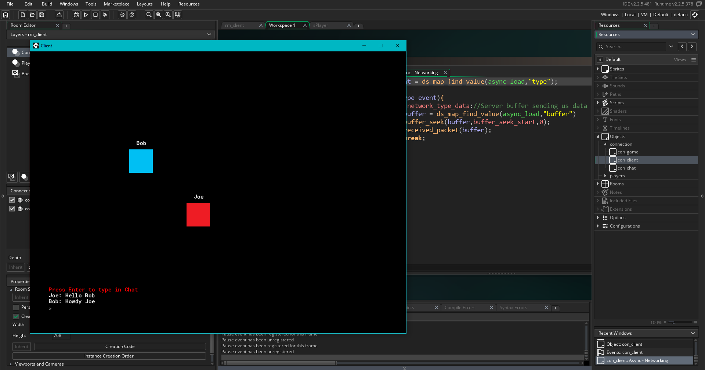

civbot (Python)

Program plays CivClicker and automates the process of building up your Civilization
Written in Python and utilizes Selenium's library to control the browser
Logic is structured as a finite state machine mixed with a set of priority objectives
What would normally take a human player a few hours takes CivBot only a few minutes
Varrying slightly on hardware
Caesar's Cypher (Java)

Program takes a String and shifts the characters in the alphabet by a given integer
Written in Java and applies the Swing library to provide a clear user interface
The logic was originally written to display on the command-line which was later
adapted into a new GUI.java through a packaged structure to call upon old functions
with a new graphical user interface
Alien-Game (GML)

Game created using GMS 2.0 and written in GML
One of my favorite passion projects where I learned to utilize the GPU to process the splash particles to reduce
CPU usage and boost performance.
This project took the most amount of planning, organization and documentation than any previous project in order to get
all the objects and scripts to work due to the shere size and scalability along the way.
Chatroom (GML)

Application created with GML 2.0 and written in GML and uses Networked TCP Sockets and port-forwarding to create a public server from which
anyone with internet access can join using the Client-side application
This project had to be structed with consideration that there will be tons of asynchronous events to account of networked devices
There had to be a clear disctinction of what had to be handled Server-side and Client-side. As well as Server-side data structures to save usernames
to client-session and ip-addresses.
For the transmission of data it had to be packaged as buffers with enums to identify the type of data and how to process it
The enums were used to identify events like users joining, disconnecting, messaging and movement(The colorful boxes)